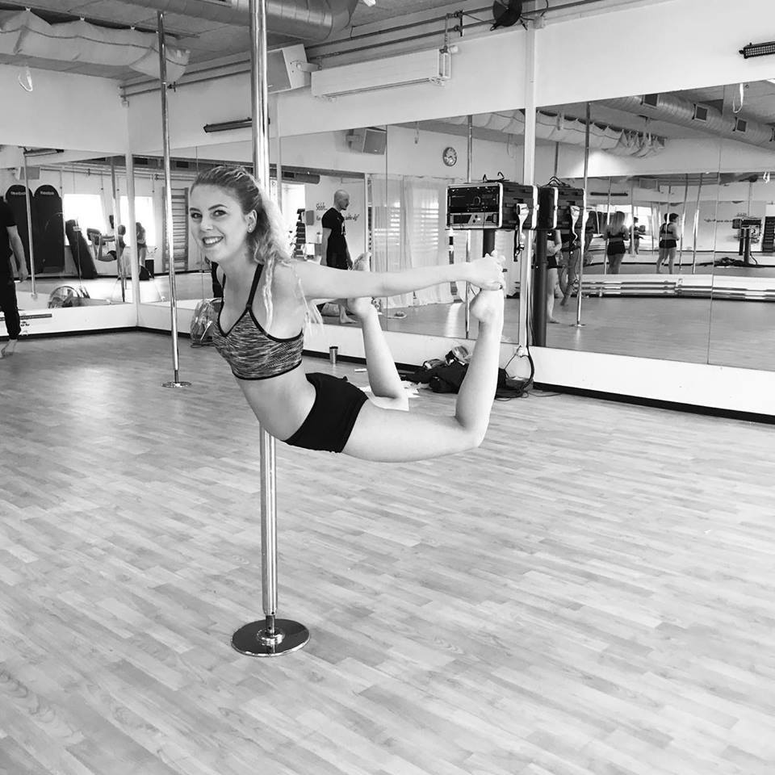
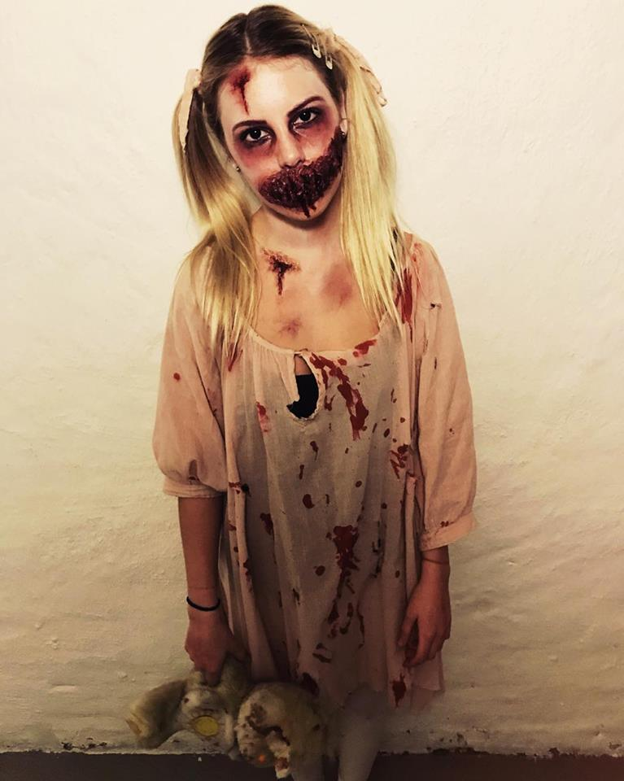

Polen er mit klatrestativ og min makeup er mine farveblyanter til det tomme lærred, vi kalder et ansigt.
Af: Michelle Østergaard, d. 15/9-17
Poledance: det samme som fitness
1 nyt trick, 1 time foran spejlet og 1 nyt billede uploaded til instagram med hashtagget: #creepyface. Velkommen til min hverdag. I min fritid går jeg til poledance hos Fit&Sund i Køge og har gået til pole i snart 3 år. Jeg vil selv sige, at jeg er dygtig, men jeg har dog ingen medaljer fået endnu - nok fordi jeg ikke har været til nogle konkurrencer. Min interesse for pole kom fordi jeg fandt sporten smuk. Det at man så oven i købet kan træne alle sine muskler på en gang betød, at jeg slap for at gå i fitnesscenter, hvilket tiltrak mig endnu mere. Yderligere elsker jeg også følelsen af, at lært et nyt trick. Jeg ejer endda min egen polestang, men grundet loftet i mit hjem kan den desværre ikke sættes op.
Dette trick kaldes: Yogini og blev taget 1 måned efter en skade på knæskallen, som var påført af samme trick i Fælledparken d. 1 maj.
Skønheden og udyret
Du undre dig sikkert over, hvorfor du læste noget om 1 time foran et spejl og et hashtag der hedder #creepyface. Nu skal du høre. En af mine andre interesser er nemlig makeup og at lave uhyggelige latex masker. I min fritid bruger jeg nemlig meget tid på Youtube , for at se makeupvideoer og videoer hvor folk arbejder med latex og ansigtsmaling. Jeg har også altid synes det sjovt at klæde mig ud, så hvorfor ikke kombinere mit indre ”legebarn” med min passion for makeup? – Halloween er jo et oplagt valg, specielt hvis man gerne vil lave noget anderledes. Det var sådan jeg endte med at lave uhyggeligt makeup. Jeg har overvejet og starte min egen Youtube kanal med makeupvideoer, men jeg føler mig endnu ikke god nok til at vise det til alle. Det stopper mig dog ikke fra og lægge det op på Instagram og få lidt respons der. Samme gælder med mine poletricks.
Halloween fest 2016 – jeg er udklædt som en lille pige besat af djævlen. Alt er selvlavet.